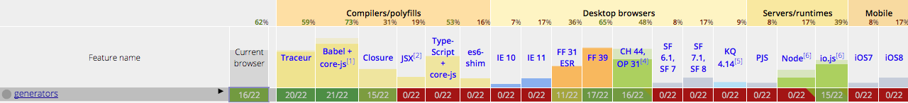

Meetup.js
An introduction to Generators
Hi, I'm Diego Calderón
I work @ MercadoLibre, in MercadoShops dpt.
We gonna talk about generators
in ES6 EcmaScript2015.
So let’s start…
JS’ run-to-completion behaviour
JavaScript is single threaded.
And have what is called a run-to-completion behavior.

Or in a more figurative way…

But there is a new kid on the block:
Generators
Generators are a new type of function which can be paused and resumed. Breaking the run-to-completion behavior.
Can we use generators right now?

There are some features money can’t buy.
For everything else there’s Babel.
Show me the syntax
Generators are declared as regular functions but in the following manner:
function* myGen() { ... }
// Or the same `function *myGen() { ... }`
We can argue about how to write a generator signature, but only when we finished the tabs vs spaces talk.
Also the yield keyword is introduced, and we’ll use as a mark for pause/restart the generator and as a way to send and receive data.
function *myGen() {
console.log('Hi');
yield;
console.log('Bye');
}
var objGen = myGen();
objGen.next(); // 'Hi'
objGen.next(); // 'Bye'
Error handling
A benefit of generators is its synchronous like semantics, so we can use ol’ try { ... } catch (err) {} to handle errors.
function *myGen () {
try {
var number = 3;
yield;
console.log(number.toUpperCase());
} catch (err) {
console.error(err);
}
}
var objGen = myGen();
objGen.next();
objGen.next();
Delegate generators
We can include a generator inside another generator using a yield variation: yield*. The nesting levels are infinite.
function *innerGen() {
yield console.log(2);
yield console.log(3);
yield console.log(4);
}
function *outerGen() {
yield console.log(1);
yield* innerGen();
// Or the same yield *innerGen();
yield console.log(5);
}
Understanding iterators and iterables
Every time we’re using a generator like this:
// Given a ´myGen´ generator function
var objGen = myGen();
We’re creating an iterator object, which we assign to the variable objGen, to control *myGen() generator.
Iterator's interface counts with the next method.
A benefit of iterables is that them can be consumed by data consumers as for…of loops, the spread operator and can be used in array destructuring.
In ES6 some iterable data sources are:
- Arrays.
- Strings.
- Maps and Sets.
Calling .next on an iterable gives us an object containing a value, or an indication that there are no further values.
var myArr = [1,2,3],
myArrIt = myArr[Symbol.iterator]();
myArrIt.next(); // Object {value: 1, done: false}
myArrIt.next(); // Object {value: 2, done: false}
myArrIt.next(); // Object {value: 3, done: false}
myArrIt.next(); // Object {value: undefined, done: true}
More on the iteration protocol:
Generator’s roles
Generators as data producers
Each yield can return a value via next().
Which means that generators can produce sequences of values via loops and recursion.
Return values with yield
yield can return a value to the generator caller.
function *myGen (x) {
var single = yield x,
double = yield (x * 2),
triple = yield (x * 3);
}
var objGen = myGen(4);
console.log(objGen.next().value); // 4
console.log(objGen.next().value); // 8
console.log(objGen.next().value); // 12
Using return inside generators
We can achieve the later example using return.
function *myGen (x) {
var single = yield x,
double = yield (x * 2),
triple = x * 3;
return triple;
}
var objGen = myGen(4);
console.log(objGen.next().value); // 4
console.log(objGen.next().value); // 8
console.log(objGen.next().value); // 12
Also we can use return with delegated generators.
Let’s see an Online example
Cycling through generators
Given a generator as the following:
function *myGen() {
yield 1;
yield 2;
yield 3;
}
Using for…of loops:
for (let n of myGen()) {
console.log(n); // 1, 2, 3
}
Using spread operator:
let myArr = [...myGen()]; // [1,2,3]
Destructuring :
let [a,b, ...rest] = myGen(); // [1,2,3]
Generators as data consumers
yield can also receive a value from next().
That means that generator become a data consumer that pause itself until a new value is pushed into it.
There are three ways of sending data to the generator: via next(), return(), or throw().
Sending data via next():
function *myGen() {
console.log('Started…');
var double = (yield) * 2,
triple = (yield) * 3;
console.log(double);
console.log(triple);
}
var objGen = myGen();
objGen.next(); // Start generator
objGen.next(5); // 10
objGen.next(3); // 9
Terminating the generator via return():
function *myGen() {
console.log('Started…');
yield; // Inserts a `return` at this point
console.log('Never gets here');
}
var objGen = myGen();
objGen.next();
console.log(objGen.return('…This is the end.').value);
Throwing errors via throw():
function *myGen() {
try {
console.log('Started…');
yield; // Throws error at this point
console.log('Never gets here');
} catch (err) {
console.error(`Error: ${err}`);
}
}
var objGen = myGen();
objGen.next();
objGen.throw('An error ocurred');
Generators as data producers/consumers
We’ve seen how generators can act as data producers or consumers.
Now we can apply these behaviours in a combined way to create new patterns, as cooperative tasks, mimic coroutines or applying complex techniques as CSP.
Also we can apply this pattern to asynchronous operations to get the maximun benefit from generators capabilities.
Generators
meet
Promises
We can use yield for waiting for a promise, and making that the promise itself resume the generator flow when it’s resolved.
This allow us to write more readable and maintenable code, which looks synchonous like, hiding away the async implementations.
Let’s see an example of this power.
The async future
Async functions
The previous pattern is very useful.
And is included in the ES7 EcmaScript2016 specification as async functions.
This new feature is merely sugar for the implementation that we saw earlier.
We can use an async function as follow:
async function() {
try {
let req = await request(http://someurl.com/getContent); // Promise aware function
// Do someting with `req`
} catch (err) {
console.error(err);
}
}
push/async generators and observables
We got generator functions
and async functions…
So we we can have
async generator functions.
However, async generators has been
deprecated in favor of Observables.
And we have an alternative but similar feature:
push generators.
Both push generators and observables are just proposals at the moment.
Credits
- Iterables and Iterators and ES6 Generators in depth by @ rauschma.
- Iterators gonna iterate by @ jaffathecake.
- ES6 Generators (serie) and YDKJS: Async and Performance by @getify.
- Async Programming in ES7 by @jhusain.
Q&A
Thanks!
Twitter: @codekult